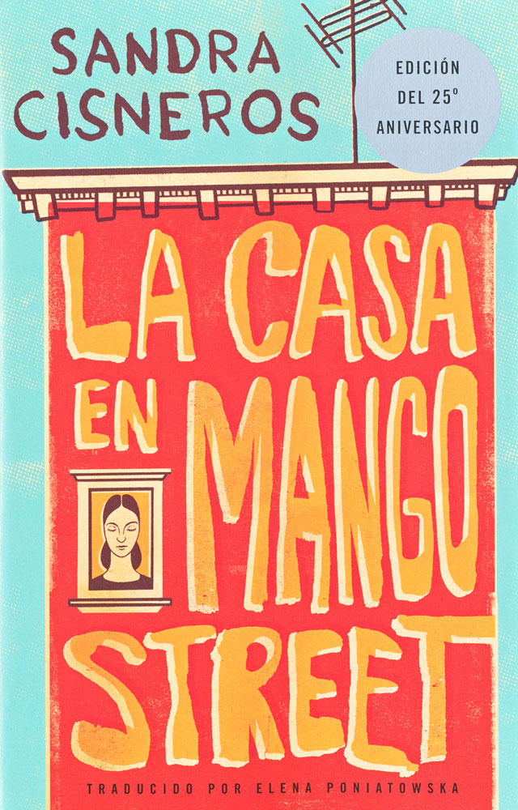
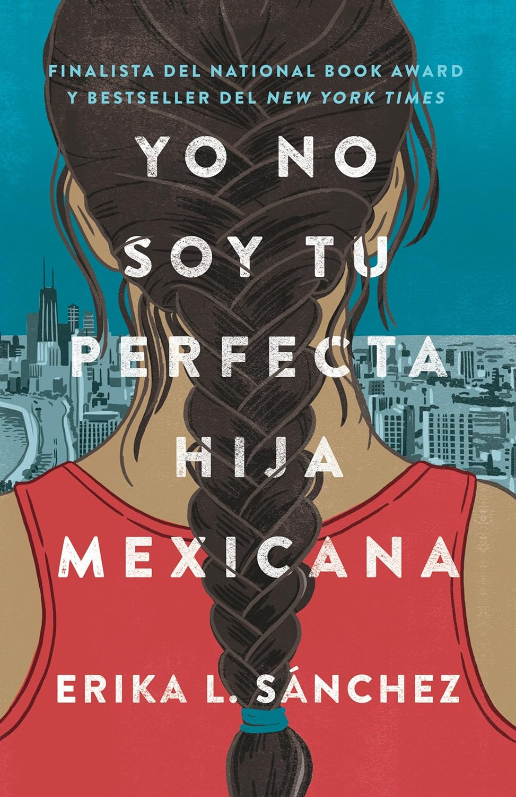
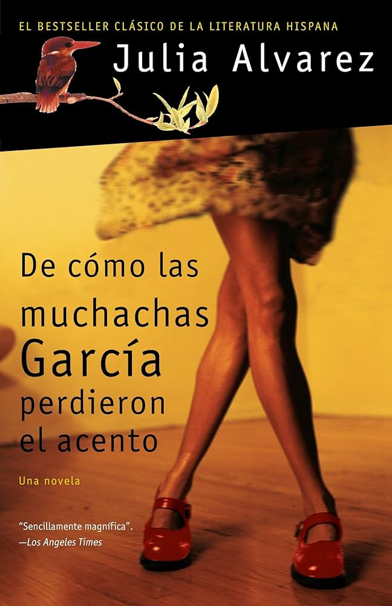
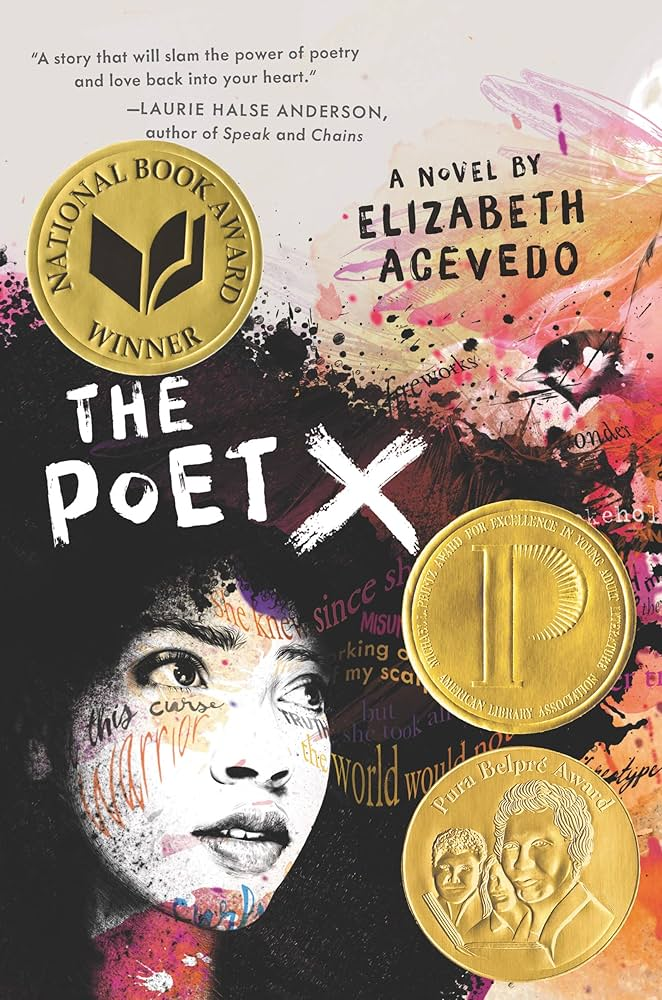

Título: La casa en Mango Street
Autor/a: Sandra Cisneros
Condado(s): Hernando
Año primero removido: 2024
Temas: la llegada a la madurez; identidad; pobreza; papeles de género
Grados: K-12
Resumen: Esta es la historia de la llegada a la mayoría de edad de una niña chicana. Cuando Esperanza Cordero tenía 12 años, su familia se mudó a un barrio latino en Chicago, Illinois. La historia la sigue a ella y a sus amigos mientras crecen emocionalmente, artísticamente y sexualmente. En una serie de retratos, la autora explora la opresión, el racismo, el sexismo y la pobreza.
Las razones por la prohibición: contenido sexual, temas sexuales, profanidad
Las razones en contexto: Esperanza es violada en el retrato se llama “Red Clowns.”
Leer el resumen de las escenas controversiales “Esperanza narra esta sección después de que haya sido agredida sexualmente por un grupo de chicos, y aunque ella le da sus impresiones y expresa su confusión, nunca especifica exactamente lo que los chicos le hacen. Sabemos que Esperanza va a un carnaval con Sally y que le gusta ver a Sally en los paseos. Sally parece descuidada y libre, y en un momento desaparece con un niño mayor. Mientras Esperanza espera a que Sally regrese, un grupo de chicos no latinos ataca a Esperanza. El evento no es nada como encuentros sexuales Esperanza ha visto en las películas o leído en revistas, o incluso como lo que Sally le ha dicho. Está traumatizada y sigue oyendo la voz de uno de los chicos diciendo con burla: "Te amo, chica española". Ella culpa a Sally por abandonarla y no estar allí para salvarla, y su ira se extiende a todas las mujeres que no le han dicho cómo es realmente el sexo.” Fuente
Contraarchivo:
La historia de violación de Esperanza Cordena es compartida por niñas en las escuelas públicas de Florida. 35 estudiantes denunciaron violación o intento de violación en los recintos escolares en el año 2024-2025, y 90 estudiantes denunciaron agresiones sexuales en los recintos escolares en 2024-2025. No tiene sentido decir que los estudiantes no pueden leer sobre cosas que les están ocurriendo. También, la lástima que viene de incidentes de victimización puede ser ayudada por leer las experiencias de un carácter. Puede dar palabras a los estudiantes que ellos pueden usar para discutir sus propias experiencias.
Además, los temas de la pobreza y el racismo aplican a las historias reales de los estudiantes también. 61,8% de los estudiantes tiene una desventaja económica en el año 2024-2025, y 813 estudiantes denunciaron agresiones debido a su raza, color o origen nacional. También es probable que los números oficiales sean muchos más bajos que los números reales porque muchas víctimas sienten lástima y tienen miedo.
Las estadísticas dan una idea del exceso de abuso sexual, pero la emoción de las historias es perdida. Una búsqueda simple en Google produce cientos de artículos de noticias sobre abuso sexual en las escuelas públicas de Florida.
Es un problema real, pero la prohibición de libros que discuten el abuso sexual no cambia nada. De hecho, la prohibición duele a las víctimas. Si la institución más grande en la vida de un niño, la escuela, dice que su historia es tan perversa para las escuelas, la lástima solo aumenta.
Para los estudiantes que no han experimentado este abuso, es una oportunidad de aprender de cosas aterradoras de una manera segura. Los niños que aprenden de abuso son más probables de encontrar ayuda si están en peligro.
Sources:
Edudata
Título: No soy tu perfecta hija mexicana
Autor/a: Erika L. Sánchez
Condado(s): Clay, Martin, Volusia
Año primero removido: 2023
Temas: identidad mexicoamericana; duelo; expectativas familiares; salud mental; madurez
Grados: K-12
Resumen: Las hijas mexicanas perfectas no se van a la universidad. Y no se mudan de la casa de sus padres después de la graduación de la escuela secundaria. Las hijas mexicanas perfectas nunca abandonan a su familia.
Pero Julia no es tu hija mexicana perfecta. Ese era el papel de Olga.
Luego, un trágico accidente en la calle más concurrida de Chicago deja a Olga muerta y Julia abandonada para volver a ensamblar las piezas destrozadas de su familia. Y nadie parece reconocer que Julia también está rota. En cambio, su madre parece canalizar su dolor para señalar todas las formas posibles en que Julia ha fallado.
Pero no pasa mucho tiempo antes de que Julia descubra que Olga podría no haber sido tan perfecta como todos pensaban. Con la ayuda de su mejor amiga Lorena, y su primer beso, primer amor, primero todo novio Connor, Julia está decidida a averiguarlo. ¿Era Olga realmente lo que parecía? ¿O había más en la historia de su hermana? Y de cualquier manera, ¿cómo puede Julia siquiera intentar estar a la altura de un ideal aparentemente imposible?
Las razones por la prohibición: contenido sexual, suicidio, sentimientos antirreligiosos, profanidad
Las razones en contexto: En el capítulo 14, Julia y su novio Connor tienen relaciones sexuales. Mientras la acción no es demostrada, entre el capítulo 16 y el capítulo 17 hay un intento de suicidio.
Leer el resumen de las escenas controversiales
Contenido sexual: Mientras están viendo videos, Connor le dice a Julia lo hermosa que es. Él comienza a besarla, y pronto él está encima de ella en el sofá. Julia todavía tiene sus zapatos puestos, y sabe que necesita quitárselos, pero está atormentada por el recuerdo de un tiempo en la escuela primaria cuando una cucaracha salió de su zapatilla en la casa de un amigo. Julia le dice a Connor que disminuya la velocidad por un minuto, él le pregunta si es virgen, y ella confirma que lo es. Él le pregunta si ella está segura de que está lista para tener relaciones sexuales, y ella dice que lo está. Connor saca un condón de debajo de un cojín de sofá, se lo pone, y los dos tienen relaciones sexuales.
Fuente
.
Intento de suicidio: Un día, después de la escuela, Julia decide tomar el autobús al centro. Está sin dinero y tiene frío, pero necesita tiempo para sí misma. En Millennium Park, camina por el anfiteatro y la pista de patinaje. Empieza a contemplar cuál es el sentido de vivir si nunca puede conseguir lo que quiere. El capítulo 16 termina. El capítulo 17 empieza cuando Julia se despierta en una cama de hospital con Amá de pie sobre ella. Julia recuerda dónde está y lo que hizo. La omisión narrativa permite a los lectores llenar los espacios en blanco sobre el intento de suicidio de Julia.
Fuente
.
Contraarchivo:
El suicidio es un problema fuerte para jóvenes, y los estudiantes en las escuelas públicas de Florida no son excepciones. Especialmente porque las niñas hispanas, como Julia en el libro, tienen tasas de suicidio más altas que las niñas blancas o afroamericanas. Una razón propuesta son las presiones únicas en las niñas hispanas que vienen de factores culturales. La historia de Julia es una historia importante porque refleja un problema específico a la historia de una niña hispana, y es un error prohibir la historia.
En 2019, según una encuesta sobre comportamientos de riesgo en jóvenes, se hicieron preguntas a estudiantes de secundaria en Florida, tanto hombres como mujeres, sobre las señales de riesgo de suicidio.
- El 24,2% de los estudiantes varones y el 43,4% de las estudiantes mujeres manifestaron sentirse tristes o desesperanzados.
- El 10,9% de los estudiantes varones y el 20,2% de las estudiantes mujeres declararon haber considerado seriamente la posibilidad de suicidarse.
- El 8,2% de los estudiantes varones y el 15,5% de las estudiantes mujeres informaron haber hecho un plan para suicidarse.
- El 6% de los estudiantes varones y el 9,6% de las estudiantes mujeres informaron haber intentado suicidarse.
- El 10,5% de los estudiantes varones y el 21% de las estudiantes mujeres informaron haberse autolesionado intencionadamente sin querer morir.
Un reporte oficial que tiene el propósito de ayudar a los maestros a prevenir el suicidio en sus estudiantes dice que un problema grande es que las personas no hablan sobre el suicidio. Es un secreto, y los estudiantes no saben cómo tratar sus propios pensamientos de suicidio ni los pensamientos de sus compañeros. Más educación y más visibilidad sobre el hecho de que el suicidio puede ser prevenido son importantes.
Fuentes:
“Youth Suicide Prevention.” Florida Department of Health.
Florida School Toolkit for K-12 Educators to Prevent Suicide. Nova Southeastern University.
Zayas, Luis H., and Amelia M. Pilat. “Suicidal Behavior in Latinas: Explanatory Cultural Factors and Implications for Intervention.” Suicide and Life-Threatening Behavior, vol. 38, no. 3, 2008, pp. 334–342.

Título: De cómo las muchachas Garcías perdieron sus acentos
Autor/a: Julia Alvarez
Condado(s): Clay
Año primero removido: 2023
Temas: immigration; Dominican American identity; family; assimilation; memory
Grados: 7-12
Resumen: Contada en orden cronológico inverso y narrada desde perspectivas cambiantes, la historia abarca más de treinta años en la vida de cuatro hermanas, comenzando con su vida adulta en los Estados Unidos y terminando con su infancia en la República Dominicana, un país del que su familia se vio obligada a huir debido a la oposición del padre a la dictadura de Rafael Leónidas Trujillo. Fuente
Las razones por la prohibición: contenido sexual, representaciones de incesto, profanidad
Las razones en contexto: Cuando las niñas visitan a su familia en la República Dominica, ellas encuentran que el novio de su prima es su primo. Tambien, personas han usado el término “incestuoso” para describir la relacion posesiva y patriarcal que el padre tiene con sus hijas. El libro yuxtapone la ideología conservadora de la República Dominicana y la revolución sexual de los 60s en Nueva York. Las ninas tienen relaciones sexuales en el contexto de navegar esta confliccion. Fuente
Leer el resumen de las escenas controversiales “Un día después de la escuela un coche la siguió mientras caminaba a casa desde la parada del autobús. El coche se detuvo y tocó la bocina, y un adulto estadounidense hizo un gesto para que se acercara. Carla asumió que quería direcciones y se sintió avergonzado de que su inglés no era lo suficientemente bueno como para ser de mucha ayuda. Le sonrió de una manera extraña y disculpada antes de que Carla se diera cuenta con shock de que estaba desnudo de la cintura para abajo, con una cuerda atada alrededor de su pene erecto. Él le pidió que se metiera en el coche, pero ella se alejó, quedó muda. Se masturbó y Carla corrió por la calle. Su madre llamó a la policía cuando Carla explicó lo que había sucedido, pero Laura no entendía lo que significaba presentar cargos. La policía insistió en hablar directamente con Carla, a pesar de que tenía miedo de ellos. Ella solo podía decir que el hombre tenía poco pelo y estaba en un coche verde. La policía necesitaba detalles más útiles sobre el coche o la apariencia del hombre, y parecía frustrada con su limitado vocabulario en inglés. También estaba mortificada por tener que describir lo que había visto hacer, ya que no tenía el vocabulario en español o inglés para articular efectivamente lo que había visto”. Fuente
Contraarchivo:
¡Los estudiantes se enfrentan a este tipo de desafíos en sus vidas todo el tiempo! Y una de las grandes cosas de la literatura es que les proporciona una manera de hablar, sentir y evaluar la experiencia dentro de los límites seguros de una historia y un aula. Mantener todos estos temas fuera del aula solo deja a nuestros jóvenes sin manera de entender, sentir, defenderse de estas situaciones cuando ocurren en la "vida real".
Julia Alvarez
Alvarez tiene sentido. Una manera de prevenir el abuso sexual de ninos es de educar los ninos en lo que esto es asi que ellos pueden reconocerlo y tienen las palabras de denunciar.
También, la experiencia de la lengua como una barrera fuerte es una experiencia compartida por miles de jóvenes floridanos. En este artículo , una estudiante habla sobre las dificultades de aprender inglés, vivir en un nuevo lugar e ir a la escuela como migrante.
Las escuelas proporcionan espacios seguros para hablar de temas controvertidos, y la literatura presenta personajes que retratan la experiencia humana en toda su riqueza y contradicción. Leer es una manera de tomar en las situaciones difíciles y comprenderlas. El punto de leer un libro en clase es tener discusión sobre cómo son estas situaciones. Hay escritura, debate y ejercicios en clase, y los niños salen de ello habiendo digerido la experiencia con formas de sentirlo y hablar sobre ello. ¡Qué maravilla!
Julia Alvarez

Título: Poet X
Autor/a: Elizabeth Acevedo
Condado(s): Clay, Indian River
Año primero removido: 2022
Temas: identidad dominicano-estadounidense; poesía; religión; familia; madurez
Grados: N/A, se dejó en blanco en el informe oficial
Resumen: The Poet X, de Elizabeth Acevedo, es una historia de llegada a la madurez narrada en verso desde la perspectiva de Xiomara Batista, una joven dominicano-estadounidense en Harlem. La novela sigue su relación con la poesía, su familia, su cuerpo, su fe y su deseo de encontrar una voz propia. Fuente
Las razones por la prohibición: la pubertad, la sexualidad, temas sexuales, sentimientos antirreligiosos
Las razones en contexto: El personaje principal se enfrenta a agresiones sexuales y body shaming. Su hermano navega su homosexualidad en un hogar muy católico. Una lucha interna de la protagonista es su fe católica y el dolor que surge de esa tensión. Fuente
Leer el resumen de las escenas controversiales
Un día, mientras Xiomara cree que su madre está en el trabajo, ella y Aman van a patinar sobre hielo. Comparten un beso apasionado en el viaje en tren a casa. Cuando Xiomara llega a casa, oye a Mami gritar y se da cuenta de que Mami la vio a ella y a Aman besándose en el tren.
Antes de que Twin pueda ayudar a Xiomara a escapar, Mami la arrastra a su altar de la Virgen María y la hace arrodillarse sobre arroz crudo. Mami la golpea y la llama una palabra ofensiva. Papi no interviene.
Al día siguiente en la escuela, Xiomara es manoseada por un chico frente a Aman. Cuando Aman no la defiende, Xiomara se enfrenta al chico y también le dice a Aman que se mantenga alejado de ella. En la iglesia, Mami obliga a Xiomara a confesar sus pecados al Padre Sean, quien le dice a Mami que Xiomara no está lista para la confirmación.
Fuente
Contraarchivo:
La experiencia del cuestionamiento religioso y la cultura dominicana y caribeña no están fuera de las vidas de jóvenes en Florida.
En Florida, muchos jóvenes latinos y caribeños viven entre la presión de la familia, la religión, la escuela y la identidad. Por ejemplo, en South Florida, jóvenes católicos han expresado que no quieren solo más rituales, sino más escucha dentro de la Iglesia. Esta experiencia se conecta con The Poet X, donde Xiomara no rechaza simplemente la religión, sino que lucha por ser escuchada dentro de un mundo religioso que muchas veces la juzga.
La identidad latina también es una presión cotidiana. En South Florida, conversaciones sobre los “no sabo kids” muestran cómo la lengua puede convertirse en una forma de juzgar si alguien es “suficientemente” latino. Otros reportes sobre estudiantes latinos en Florida muestran que muchos jóvenes son burlados por hablar diferente, estar en clases de ESL, o ser percibidos como inmigrantes. En este contexto, una novela como The Poet X no introduce problemas ajenos a Florida; refleja conflictos que muchos estudiantes floridanos ya están viviendo.
Fuentes
Cabrera, Sherrilyn, and Jimena Romero. “‘No Sabo Kids’: How South Florida Latinos Are Confronting Their Relationship with Language and Identity.” WLRN, 25 Apr. 2025.
Odzer, Ari. “Feds Say Popular School Program for Latinos Discriminates Against Other Ethnicities.” NBC 6 South Florida, 25 Sept. 2025.

Título: Sólo quedó nuestra historia
Autor/a: Adam Silvera
Condado(s): Clay
Año primero removido: 2023
Temas: duelo; amor; identidad LGBTQ; amistad; madurez
Grados: 9-12
Resumen:
Cuando Theo, el primer amor y exnovio de Griffin, muere ahogado en un accidente, su universo estalla. A pesar de que Theo se había mudado a California para asistir a la universidad y había comenzado a salir con Jackson, Griffin nunca dudó de que Theo regresaría con él cuando fuera el momento indicado. Pero ahora, el futuro, todo lo que tenía pensando para su vida, se está derrumbando.
Para empeorar las cosas, la única persona que de verdad comprende el dolor de su pérdida es Jackson. Pero sin importar cuánto se sinceren el uno con el otro, Griffin continúa hundiéndose en su dolor. Comienza a perderse en sus obsesiones y elecciones destructivas, mientras todos esos secretos que tiene tan bien guardados podrían destruir su vida para siempre.
Si Griffin quiere reconstruir su futuro, primero deberá enfrentarse a su pasado, a cada pieza desgarradora del rompecabezas de su vida.
Las razones por la prohibición: la sexualidad, temas LGBTQ+
Las razones en contexto: El personaje principal es LGBTQ+. El tiene un novio muerto, y otras personajes tienen relaciones LGBTQ+. Fuente
Leer el resumen de las escenas controversiales No hay una escena específica. Es simplemente la identidad de los personajes.
Contraarchivo:
Los jóvenes LGBTQ+ en Florida viven presiones reales parecidas a las del libro.
La mayoría de las prohibiciones en Florida vienen de la presencia de las temas sexuales o la presencia de personajes o temas LGTBQ+. Porque en las mentes del gobierno, la presencia de cualquier cosa LGBTQ+ es la presencia de temas sexuales. Pero, esta confluencia duele a estudiantes LGBTQ+.
Esta confluencia de sus identidides con relaciones sexuales y la falta completa de educacion sexual en Florida producen comportamiento de riesgo en los jovenes LGBTQ+. Un reporte sobre jóvenes LGBTQ+ floridanos encontró altos niveles de ansiedad, depresión y pensamientos suicidas, no porque estos jóvenes estén “mal,” sino porque enfrentan discriminación, rechazo y falta de apoyo. Adicionalmente, los jovenes hispanos LGBTQ+ tienen ratos de depresion y suicidio mas alta que sus companeros blancos. Por eso, los libros pueden funcionar como espacios seguros para explorar sentimientos que muchos jóvenes no pueden expresar abiertamente en casa, en la escuela o en la iglesia.
Las vidas e historias de los jóvenes LGBTQ+ no desaparecen con las prohibiciones. Simplemente, sus mundos se convirtieron en más hostil y frío.
Pero, hay organizaciones en Florida dedicada a esta población como así “Familias con Orgullo” que ofrecen terapia a las familias hispanas con un niño queer para facilitar la aceptación.
También, fue específicamente la versión en español que fue prohibida.
Fuentes
Miller, Daylina. “Why Anti-LGBTQ+ Bills Can Fuel Anxiety and Depression—Even If They Don’t Pass.” WUSF, 5 Mar. 2026.
San Felice, Selene. “Politics, Discrimination Hurt Young LGBTQ+ Floridians’ Mental Health.” Axios Tampa Bay, 20 Mar. 2025.
Tannen, Janette. “ “Why Anti-LGBTQ+ Bills Can Fuel Anxiety and Depression—Even If They Don’t Pass.” WUSF, 5 Mar. 2026.
San Felice, Selene. “Politics, Discrimination Hurt Young LGBTQ+ Floridians’ Mental Health.” Axios Tampa Bay, 20 Mar. 2025.
Tannen, Janette. “Familias con Orgullo” University of Miami News, 05 June, 2023.
The Trevor Project. “2024 U.S. National Survey on the Mental Health of LGBTQ+ Young People in Florida.” The Trevor Project, 2024.